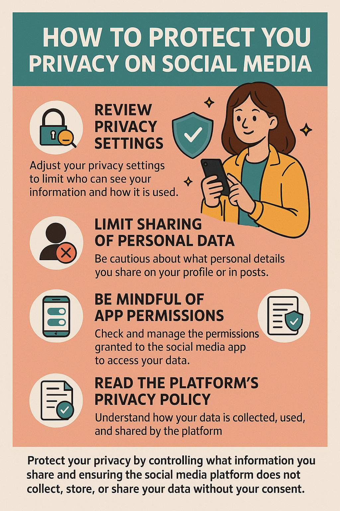

Building Your Foundation for Exceptional Customer Service and IT Excellence
Welcome to Atlantis Corporation’s Ultimate Startup Support Kit! This resource hub equips your team with the tools, knowledge, and guidance needed to launch and manage IT and customer service operations efficiently. Navigate through the tabs to access professional insights and foundational material for success.
Explore professional resume templates and guidelines tailored for IT and customer service careers. Learn how to highlight certifications (CompTIA, ITIL), technical skills, and support experience. Go to Resume
Customer Relationship Management (CRM) systems help track client issues, streamline communications, and maintain service quality. We recommend:
| Category | Option 1 | Option 2 | Option 3 | Best Choice & Justification |
|---|---|---|---|---|
| Business Laptop | Dell Latitude 5540 $1,099 Intel i7, 16GB RAM, 512GB SSD |
HP ProBook 450 G10 $999 Intel i5, 16GB RAM, 256GB SSD |
Lenovo ThinkPad E15 $1,049 AMD Ryzen 7, 16GB, 512GB SSD |
Dell Latitude – Best overall performance and support |
| Monitor | HP 24mh (24") – $139 | Dell P2422H (24") – $189 | Acer R240HY – $129 | HP 24mh – Balanced price and features |
| Router | TP-Link Archer AX21 – $79 | Netgear Nighthawk R7000 – $129 | ASUS RT-AX55 – $99 | TP-Link AX21 – Wi-Fi 6 at budget-friendly cost |
| External Storage | Samsung T7 1TB – $129 | WD My Passport 1TB – $109 | SanDisk Extreme 1TB – $139 | Samsung T7 – Fastest read/write speed for price |
Issue: John's PC powers on (lights and fans active), but no display appears and the system doesn’t reach the Windows login screen.
John’s PC likely failed due to either a GPU, RAM, or motherboard issue. By following logical steps—starting from display checks down to minimal boot configuration—we narrowed the problem efficiently. Final diagnostics suggest checking motherboard or CPU after eliminating more common faults. This process showcases a structured, cost-effective approach to PC troubleshooting.
| Category | Option 1 | Option 2 | Option 3 | Best Choice & Justification |
|---|---|---|---|---|
| Productivity Suite | Microsoft 365 – $99/year | Google Workspace – $6/user/month | LibreOffice – Free | Microsoft 365 – Full features, industry standard |
| Security Software | BitDefender Total Security – $60/year | Norton 360 – $75/year | Windows Defender – Free | BitDefender – Lightweight and comprehensive |
| Collaboration | Microsoft Teams | Slack | Zoom | Teams – Seamless with Microsoft 365 |
This detailed report outlines the final selections made for the CNW Starter Kit and provides full justification for each component, comparing costs with typical industry standards.
Total Hardware Cost: $1,446
Total Software/Network Cost: $226
Total Estimated Investment: $1,672
Industry Comparison: Saves over 20% versus average $2,000–$2,500 kits.
Scenario: Emma discovered that her personal information was shared by a social media platform without her consent. She now wants to protect her data and make sure this doesn’t happen again.
This ensures Emma takes proactive steps to secure her digital identity and prevents unauthorized data sharing. It promotes digital ethics by emphasizing consent, transparency, and user control.